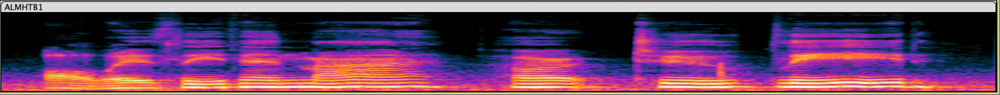

The FFT is what compelled me to start building in computer music. If you’re not familiar, the Fast Fourier Transform (FFT) is an algorithm that deconstructs a complicated sound wave into a linear combination of fundamental frequencies.
The expression of intangible descriptors like an instrument’s timbre in concrete mathematical terms, enabled by the FFT, creates a powerful precedent and motivates ideas like modeling creativity and enhancing creative expression. Indeed, this mindset is the basis for Alette, a tool that lets you turn simple musical inputs like a melody you hum or a rhythm you tap onto your phone into a complete song that you’d be excited to share with anybody. In the world of Dalle-2 and Jasper, where AI and ML systems allow for seamless expressions of creativity, there’s a notable gap where music tools should stand.
The past year+ has been spent developing software that aims to fill that gap and this blog is a description of what I built and what the next steps are.
We live our lives in the time domain (T). When you look a sound wave, you’re seeing how air pressure at a certain point in space changes over time. Examining audio in the time domain isn’t just intuitive, it can lead to meaningful understandings about the sound.
When musicians talk about the “envelope” of a sound, they’re mostly referring to how the volume changes over time. Most audio tools model the envelope in four phases: Attack, Decay, Sustain, and Release (ADSR). One of the first things I built was a tool that detects the envelope and you can see the result plotted over the audio wave in Figure 3.
Envelope is especially important in percussion instruments and really can change your entire perception of the sound. Figure 4 shows a snare and a tom being made just by modulating the envelope of the sound.
Figure 3 placeholder: Plot of sound waves with envelope overlay and audio clipsThere are all sorts of things you can learn from a sound by looking at it in the time domain — power, signal to noise ratio, and envelope just to name a few.
The FFT allows us to look at a snippet of audio in the frequency domain (F). Rather than seeing how the wave changes over time, we’re getting the weight of all the frequencies sounding during that clip.
The reason that a piano playing an “a” sounds different than a cello playing the same note is that they have different timbres. The note “a” has a frequency of 440 Hz. When an instrument plays a note, however, we don’t just hear one frequency. We hear many frequencies that are all integer multiples of the fundamental. In the case of an “a,” that means we’re hearing 440Hz, 880Hz, 1320Hz, etc. The timbre of an instrument is the relationship of the amplitudes of these frequencies to one another. In figure 5, we use the FFT to deconstruct the complicated audio waves of a trombone and of a cello.
In an effort to convince you this really works, listen to individual sine waves get added together. When only one is playing, it will sound computerized. As more and more get layered on top of one another, it starts to sound like a real instrument. In the video you can listen to the reconstruction of a trombone sound.
Looking at the frequency spectrum of a sound is immensely powerful. It’s the basis of how we do speech to text, and source separation. To combine the first two ideas, think about what it would look like to see the frequency spectrum evolve over time. This visualization is called a spectrogram. At each point in time (x), you'd be able to see all the frequencies (y) and how strong they are sounding (z, color). Figure 7 shows the spectrogram for a short vocal track. Because machine learning models have advanced farther for image generation than for music, there is actually research being done on how to process and generate spectrograms rather than raw audio!
 Figure 5: The spectrogram for a short vocal recordingSynthesizers are a critical step in the process because they allow us to convert information like pitch and duration into sound. Musicians have come up with a ton of creative ways to turn information from sound. From adding sine waves together to applying filters to white noise to more technical approaches like frequency modulation (developed by John Chowning here at Stanford), the search for new ways to generate sound is persistent because sounds have such a big impact on a listener’s perception of the song and its connection to a musical era. Our goal is to innovate on workflow so rather than trying to make sounds people have never heard, the synthesizers we write need to create recognizable sounds that ground music in a particular genre.
Additive synthesis is the process of combining waves of different shapes and frequencies to create complex tones. The Alette additive synth is really good at making pitched sounds that we can use to depict melodies, bass lines, and harmonies. Not only can it make different types of sounds, it can make sounds that fit into a variety of styles. The melody line might come from a pop song, the bass from a jazz standard, and the pad out of a trance hit.
Figure 6 placeholder: for each of melody, pad, bass show 2 periods of the sound wave and the audio clipSubtractive synthesis is the process of taking random noise and applying filters to take control of the sound. This method is good at generating percussive sounds like a snare or hi-hat or kick. Take a listen to this “drum kit” which is modeled on a disco setup.
Figure 7 placeholder: for each of snare, hi-hat, and kick show a complete impulse response. Below is an audio clip with a quick drum lineGranular synthesis is a technique that lets us chop up recordings, like the inputs we’re provided, and create new sounds from small chunks, or grains. Not only does this lend itself to creating new sounds, it makes the sounds more complex and unpredictable than anything we could make with physical instruments or with additive or subtractive synths. Nowadays, electronic instruments are not limited to use in “electronic music” so listeners are accustomed to hearing synthetic and acoustic material paired together. This voice is singing on top of a granular synthesizer operating on a guitar (Figure 13).
Figure 8 placeholder: Original clip + audio, slice + audio, synthesized sound wav/envelope + audioDJs do a whole lot more than ‘press play’ during a set. All of the dials they have on their DJ controller apply audio effects that modulate the sound coming out of the speakers. Sometimes this creates a stylistic flourish like a phaser that adds energy and variety to a song. Other times the effect might not be perceptible unless you can reference the original mix, like a delay that’s synced to the beat and makes every drum hit sound twice as fast.
When we’re making music, we use processors in the same way, adding flourishes and augmenting inputs, but we can also use them to refine the song that we produce. Compressors make our output have a uniform level. Reverb can trick us into thinking we’re listening to something at a concert rather than on a pair of headphones.
I implemented a library of processors with traditional controls as well as high-level controls with the hope that machine learning models will learn how to control the effects effectively.
When I started this project I talked to another founder who is a pro at machine learning for audio signal processing. I was flustered because I knew I had a lot to learn in this field. His advice was to use traditional techniques where I can and, when those don’t work, use machine learning to tackle specific challenges and well-defined problems.
I hit this wall with polyphonic note detection and it seemed like others had too. There are a variety of signal processing techniques (link to paper) that, frankly, don’t get the job done. Google took the field forward with SPICE , a self-supervised model for pitch estimation. Still, it’s not robust enough to handle low quality vocal audio. I took the opportunity to write a machine learning library for myself. I relished the labor of writing the back prop function from scratch and spent several evenings feeling my M1 MacBook Pro heat up as it pushed the learning curve higher and higher.
Note detection is a critical step in getting information from audio because it helps us convert “sound” to “music.” I developed a note detection algorithm that combines machine learning and signal processing techniques and is able to outperform SPICE on the data I need to use it on. Rather than creating a pitch estimation for each frame, my algorithm separates the tasks of estimating whether a note is playing or not and evaluating the pitch. Finally, we can group this information into Notes (Figure 8).
Since then, ML has become more than an analysis tool for me and I’ve expanded my library to include far more than vanilla NNs. We use evolutionary algorithms, decision forests, CNNs, and more to tackle complex generative tasks that can’t be solved with traditional methods.